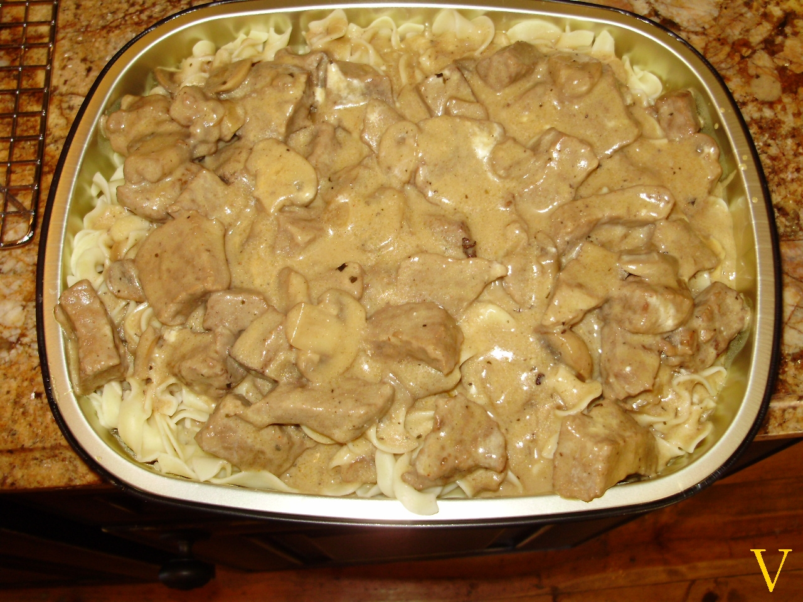

Beef Stroganoff

home
This should be a simple recipe to easily cook beef stroganoff.
As I am no cook, I am following these
instructions
for how to cook beef stroganoff in this recipe page.
ingredients:
- 600g scotch fillet steak/boneless rib eye
- 2 tbsp vegetable oil
- 1 large onion
- 300g mushrooms
- 40g butter
- 2 tbsp flour
- 500 ml beef broth
- 1 tbsp Dijon mustard
- 150 ml sour cream
- salt and pepper
cooking steps:
- Flatten steak to 3/4 cm thickness (use fist or rolling pin).
- Cut into 5mm wide strips. Cut long strips in half.
- Sprinkle with a pinch of salt and pepper.
- Add tbsp of oil to skillet and heat skillet.
- Spread 1tbsp oil in skillet. For half the strips quickly sear both sides for 30s.
- Add tbsp of oil to hot skillet.
- Sear the remaining strips for 30s per side in hot skillet.
- Turn heat down to medium high.
- Add butter and let it melt.
- Add onions and let it cook for one minute.
- Add mushrooms and cook until golden brown. Make sure to scrape bottom of pan to for increased flavor.
- Add flour. Cook for one minute while stirring.
- Slowly add broth while stirring.
- Add sour cream and mustard. Stir until incorporated.
- Bring to simmer, then reduce heat to medium low.
- Wait for it to reach the consistence of pouring cream. Then adjust salt and pepper by taste.
- Add in the seared beef bits and let simmer for one minute then immediately remove from stove.
- Serve over pasta or egg noodles.
home